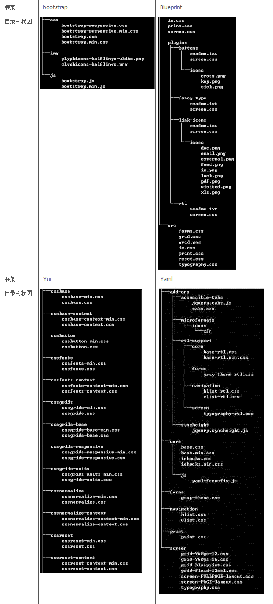
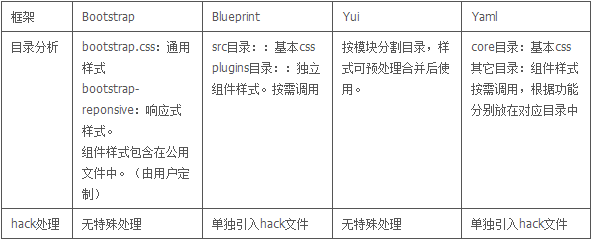
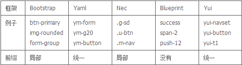
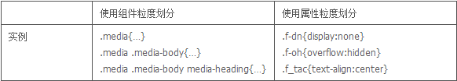
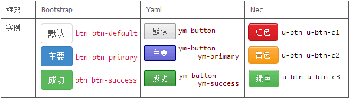
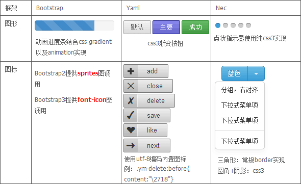
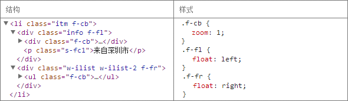

现在很多人会使用 CSS 框架进行快速建站。
那 CSS 框架是什么呢，它通常是一些 CSS 文件的集合，这些文件包括基本布局、表单样式、网格、简单组件、以及样式重置。使用 CSS 框架大大降低工作成本进行快速建站。
当然对于一些大型的项目，可能会很难照搬某些框架直接使用的，因为直接使用会带来一些限制或者冗余的问题。
但在 CSS 框架已经日趋成熟的今天，在我们设计项目架构、规范的时候，现时市面上一些优秀的框架也可以给我们提供很多可借鉴的地方。
本文主要从几个方面讨论 CSS 框架可以对我们项目的借鉴点：
1. 目录组织
2. CSS 规范
3. 图形
4. 应用方式
5. 小建议
1. 目录组织
在目录组织的分析上我们参考了 Bootstrap , Blueprint , Yui , Yaml 四个框架的组织方式

1
当使用一个框架时，我们一般会把所需框架本身的样式链到页面中，然后在它的基础上进行修改。所以框架本身所带的样式可以理解为基础样式。即我们平时所说的全局样式+组件样式。

2
可以看到，在目录架构上4个框架基本都是遵循基本样式+用户定义扩展样式的常规方式进行组织。
然而，如果按 Bootstrap 做法的话，可能会出现把不常用组件样式也包含在全局样式中一并引入，如果把组件也写在全局 CSS 中，最好确保该组件出现频率较高才引入，避免不必要的带宽浪费。
关于 hack：
对于针对低版本浏览器所写的 hack，对它的处理方式，Blueprint 和 Yaml 都是使用单独引入 hack 文件的形式进行处理，笔者也尝试过这样的做法。
个人觉得这种方式的好处是可以避免给高级浏览器带来冗余代码，而且通过条件判断引入 CSS 也不会给高级浏览器带来额外的请求。
这种方式比较适用于，高低级浏览器本来就刻意设计成有较大差别的情况下，即 hack 比较多的时候才使用。不然就为了十来行 hack 而多引入一个文件的话似乎也不太可取。
2. CSS 规范
a. 前缀
框架中公用模块都有前缀，分别有以下3个思想：
1. Yaml , Yui ：无论如何都是统一的标识开头，再加上改模块名称。
2. Bootstrap：直接模块名称，这方式需要定义关键字。公用模块是 button 都以 btn – 开头， image 则以 img- 开头。
3. Nec ：单字母开头来标识组件。

3
一般来说应用一个框架，我们先引入框架的样式，再在之上覆盖上自己的样式，所以可以把框架看作是我们的基础CSS。
我们可以借鉴框架的前缀规范来规划我们的基础 CSS 前缀，根据自己的项目实际情况采取不同的方案。
b. 类的划分
类的划分方式在框架中主要有2种标准，分别为：以【组件为粒度】，和以【属性为粒度】。
1. 组件为粒度：把组件的所有样式封装在一个类名中，调用类名即可使用该组件。
2. 属性为粒度：需要属性的时候，调用对应类名拼装。

4
在我们日常项目中，以属性对类名进行划分比较少见，因为一直遵循的都是“结构、样式、行为”分离的原则，力求降低三者的耦合度。
然而以这种方式划分在一些特定情况下也不是完全不可取。
例如对于一些元素的隐藏，如果没提供相关的类名的话，在js开发阶段开发就会直接内联 style 在对应的元素上（这将会触发 repaint/reflow），所以更好的方式是和js开发约定一个类名触发显示/隐藏的动作，在这种情况下，给 display: none 划分一个特定的类名，供给开发调用就会显得很实用了。
所以，更重要的是我们对所在的实际情况进行分析，并给出最佳的解决方案。
c. 组件类名组合方式
组件的样式，基本都是 基础类名+扩展类名 的套路来进行组合的变化。
但在选择符方面可以有3种方式， 目前最多框架使用的是：多类选择，通过修改 html 的类名组合，实现还原。
以按钮样式的实现为例：
5

这里采用常规的组合方式，不再赘述。
d. 高级 CSS 选择器
在对 Bootstrap 进行分析的过程中，发现 Bootstrap 定义了一系列的icon，这些 icon 的类名全部都是以 icon- 为前缀。
而在 CSS 中，Bootstrap 用到了子串匹配属性选择器。
[class^=”icon-“]
使用这个的好处是，对于 icon 类的标签，我们再也不需要对其加一个对于 icon 的公用类名，只需要类名是以 icon- 开头就可以匹配所有 icon ，省了一个类名。
使用这种方式可以降低一定的成本，但是只在 IE7+ 浏览器才适用，如果要使用该类选择器的话请考虑是否需要兼容 IE6。
虽然 IE6 不支持，但是高级 CSS 选择器的确十分吸引，并且可用于移动端，所以特此提一下。
3. 图形
在参考的 CSS 框架中，它们会提供一些简单的图形元素， 但是实现的方式也有彼此不同之处。
但是共同点是，现今较新的框架，对于一些简单的效果，都会使用 CSS3 实现一些简单的渐变，对低版本 IE 进行优雅降级。

6
4. 应用方式
在参考实例是怎样使用这些框架的方式上，基本和我们平时项目使用方式一致。
在应用方式上，一般有两种方式。
1. 对于以组件为粒度的样式：
按照 组件的 html 结构 来拼合自己的页面模块，再辅助添加 自定义的类名 来控制其个性化定义。
2. 对于以属性为粒度的样式：
按所需要的样式对应类名进行拼接。
下面可以看几个简单的例子：
1. 以组件为粒度：
对于组件的覆盖，采取常规的自定义类名覆盖样式，此处不再赘述。
2. 以属性为粒度：
7

可以看到，若需要样式是属性以粒度，即把对应类名调入即可，但是在实际项目中，这种方式由于灵活度不够，并且没有做到结构与样式分离，实际项目中比较少见这种用法。
而对于功能性的动作，例如显示/隐藏元素，可以灵活使用这种方式，把所需样式写到一个特定类名中供给js调用，避免直接写入 style 导致 reflow/repaint。
5. 小建议
对于目录组织：
目录组织——
可以考虑结合 Bootstrap 与 Yaml/Blueprint 的思想。
a .把常用的基础样式压缩合成一个文件。
b. 把不必现组件样式抽离成单独 CSS，按需加载。
【优化点】
减少了单个 global_min 文件的大小。
【权衡点】
需要考虑由此可能导致的请求数过多问题。
hack——
根据实际情况，可考虑把针对 IE6 的 hack 文件单独分出来。
【优化点】
便于对低级浏览器的大型差异化处理，并且减少对于高级浏览器的冗余代码。
对于 CSS 规范：
CSS 前缀——
可考虑尝试 Nec 的方式，约定 “单字母_xxx”为公用样式的标识，取消单一的公用前缀，通过以不同字母作为顶级前缀，对公用模块进行划分。
【优化点】
减免了“公用前缀_组件前缀_组件名”的多级前缀，通过以类名格式作为标识，代替了原来公用前缀的作用。
【权衡点】
仍需按项目实际情况考虑。
类的划分——
可考虑约定统一几个功能性的类名（以属性为粒度的类名），例如元素隐藏的类名，供给js调用。
【优化点】
减免让开发直接写 style 内联 CSS，造成页面的 reflow/repaint。
高级 CSS 选择器——
在对移动端页面进行重构时可以考虑使用更高级的 CSS 选择器。
例： [class^=”icon”]，:first-child，:nth-child(n)….
【优化点】
相比于传统的方法，节省类名。
对于图形：
考虑与设计师约定，视觉效果在可接受范围内，部分效果使用 CSS3 实现，对低级浏览器实现优雅降级。
【优化点】
大量减少图片的使用，节省带宽以及请求数。
最后
随着新技术的不断涌现，越来越多优秀的 CSS 框架出现在我们的眼前，这里分析覆盖面有限，未能一一进行对比并深入探索，如有不足之处，敬请大家多多指正交流。